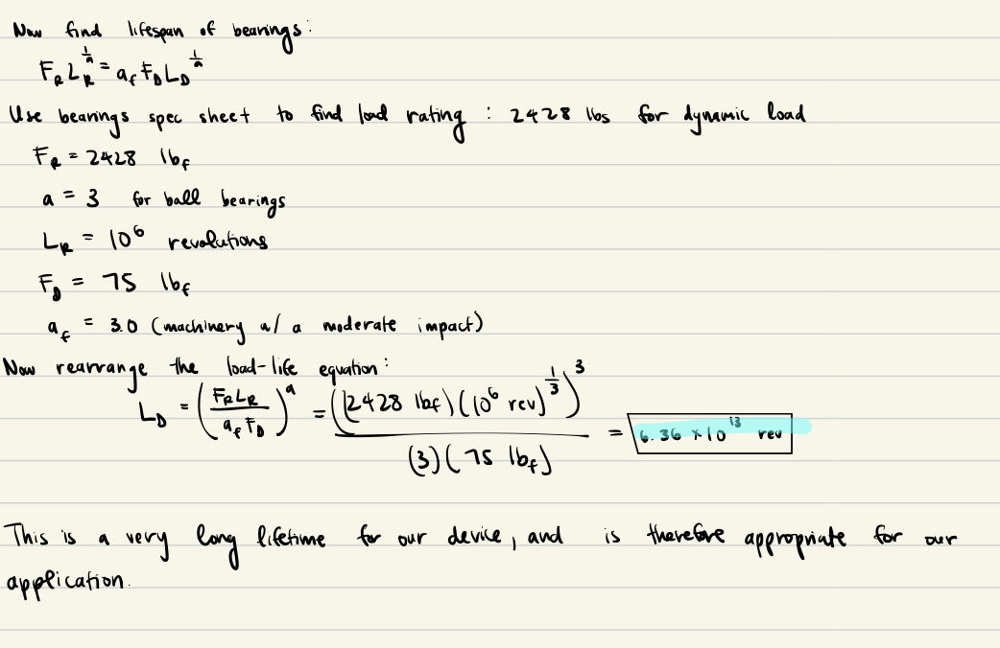
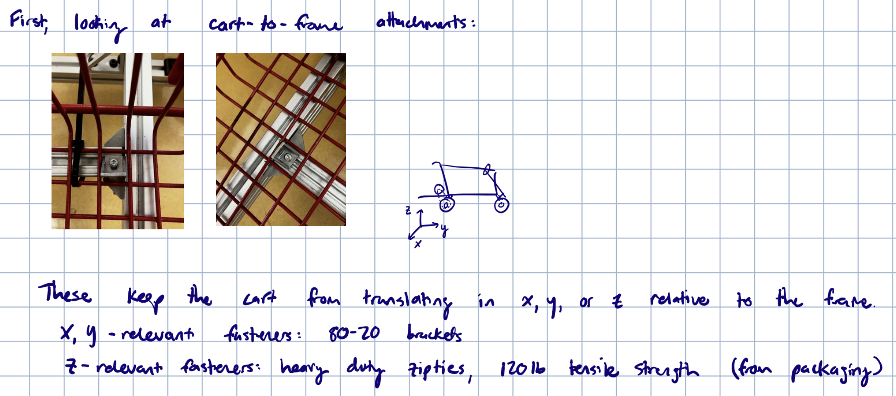
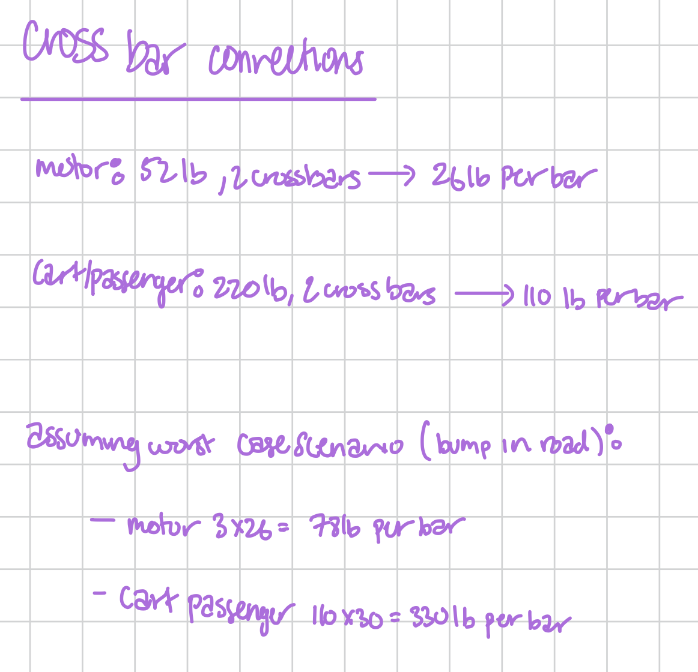

Evaluation of Design
Motor & Gear Ratio Analysis
The calculations below show how we solved for the desired torque and speed of the system, assuming that our entire system weighs 300 pounds and we want a speed of at least 5mph and acceleration of \(1 m/s^2\). We assumed that the weight is evenly distributed among the four wheels.
Because our desired torque output is much greater than what the motor actually outputs, we needed to determine the necessary gear ratio in order to increase the torque of the motor.
By using the motor RPM and torque chart, we were able to determine that we would need a 6.31 gear ratio in order to reach the desired torque. Thus, we implemented two sprockets for our back axle, where the driving axle has a 10 tooth sprocket transmitting power to a 65 tooth sprocket connected to the wheels, giving us a 6.4 ratio.
We could also determine the expected power output to be 0.43 hp by using the angular velocity and torque.
Back Shaft Analysis
Torsional Stress
We can first draw a FBD of the torsional stresses acting on the shaft due to the tension of the chain acting on the sprocket. From our calculations above, we know that the torque is expected to be 13.25 lb-ft due to the gear ratio implemented. Thus, we need to find the 2 forces acting on the sprocket due to the chain.
\(F_1\) is tension, while \(F_2\) is in slack due to how the chains are moving relative to each other. Thus, we can assume \(F_2 = 0\), and solve for \(F_1\) using the known torque value.
We can now also find the shear stress acting on the back shaft and compare it to the tensile strength of the steel we are using.
Carbon steel has a tensile strength between 400-700 MPa, and the stress expected to act on our shaft is significantly less than that. Thus, our back shaft should be able to withstand the shear and torsional stress it undergoes.
Bending Stress and Deflection of Back Axle
We then wanted to determine the deflection and bending stress that the back axle experiences. We could simplify the system as a simply supported beam with 2 point loads (where the bearings attach to the frame of the vehicle). Since our entire vehicle is 300 pounds, we assumed that the back of the vehicle will hold roughly half of that weight (~150 pounds). Thus, each point load will hold about 75 pounds assuming an equal distribution across the shaft.
The maximum deflection calculated located in the center of the shaft is 0.4 inches, which is greater than what we expected and saw in our system as it was performing.
We could find the maximum bending stress by finding the maximum moment.
The bending stress of 172.37 MPa was less than the yield stress of structural steel, and thus will not yield under the expected load.
Bearings Lifetime Evaluation
In order to find the lifetime of the back axle bearings, we can model the bearings as a simply supported theme with 2 point loads acting on the bearings from the weight of the vehicle similar to how we modeled the system to solve for bending stress.
This allows us to find the force of the bearings and the power outputted by the shaft.
The power that the shaft outputs is 0.44 hp, which is within the capacity of our physical motor and seems reasonable to our expectations of its performance.
We can now find the lifetime of the bearings by using the values calculated above along with additional values found from the Block Bearing’s specification sheet.

The lifetime of the bearings is \(6.36 * 10^{13}\), which is a very long lifetime for our vehicle. Thus, the bearings chosen are appropriate for it use.
Chain & Sprocket Analysis
Chain Calculations
Our system uses a #35 chain to connect the sprocket, so we first had to determine the allowable horsepower of the chain and potential areas of failure. Thus, we first found the nominal power for a #35 single stranded chain.
After our calculations, we determined that the link plated will break before the roller limited, so we will use the link plated value to determine the allowable horsepower.
Frame Analysis
Load Analysis on Cart and Frame Attachment

Ziptie Analysis
Bending Stress of 80-20 - Frame Loading Analysis
Frame attatchment to Back Axle (Hose Clamps)
Hand Brake Analysis
Front Axle Analysis
Front Axle Analysis on Bracket Holding Front Wheel
Front Axle Analysis on weld
80-20 Fastner Analysis
Assumptions & Worst Case Analysis
Static loads for this system include the weights of the cart, passenger, and motor. The dynamic loads consider speed and road obstacles. The system’s dynamic loads include accelerating, braking, and impact of obstacles.
80-20 Corner Bracket Analsis
There are 4 corner brackets. Each bracket contains 2 screws and 2 T-nuts. This image shows the calculations that ensure the shear stress of each screw on the corner brackets does not exceed the tensile strength of the screws.
80-20 Cross Bar Analysis
 Analysis on each screw on the cross bar connections that ensures their shear stress does not exceed their tensile strength.